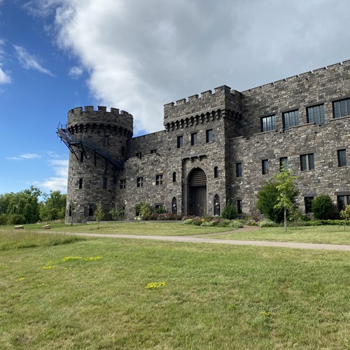
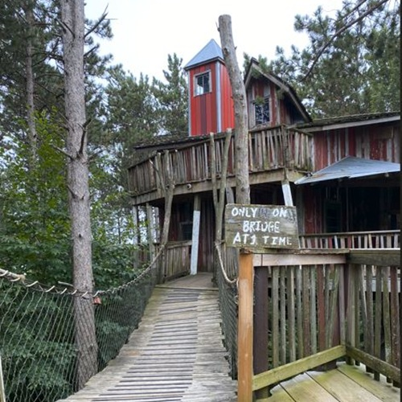
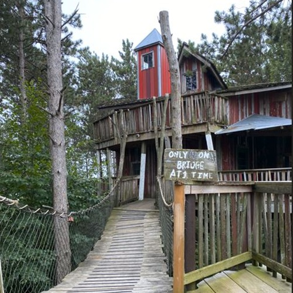
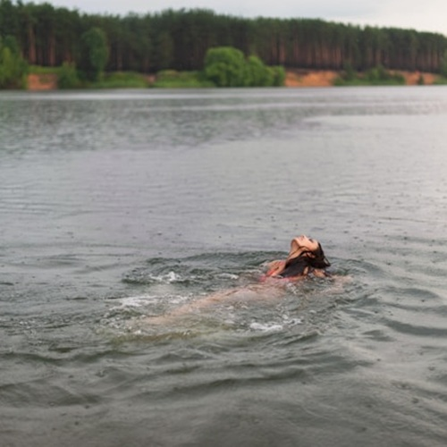
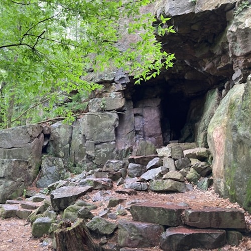
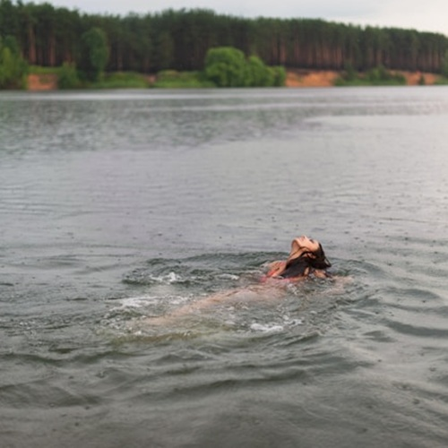
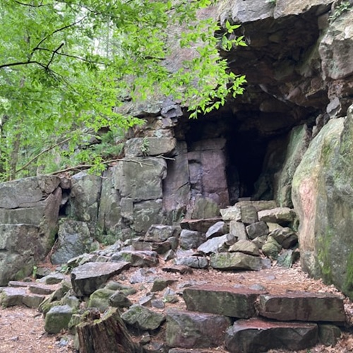

Around Town

Epic Systems
This is the largest healthcare software company in the US and you’ll be surprised to see how they all work there. With over 30 themed buildings you can be in the wild west, a sci-fi adventure or in a stable. Who knew offices could be so fun. An absolute must see. You could spend all day on a self guided tour.


 

Devil's Lake State Park
This is everyone’s favorite state park to visit. Play sand volleyball, picnic on the lake shore, rent a paddleboard or take a quick hike to the Devil’s Doorway. With so many unique attractions it’s a clear winner. Our favorite is camping!
 



Apple Orchards
Here in the fall? Go to Schuster’s Farm or Ski-Hi to pick apples and enjoy cider and apple cider donuts. It's a family fun experience you won't regret.
Ice Age Trails
Hike along one of the many beautiful segments of the Ice Age trail. This trail follows where the glaciers stopped back during the ice age. In fact it is due to the glaciers that Wisconsin is as flat as it is. When the glaciers melted it smashed and leveled all the land around it.

Paddleboard or Kayak
Between lake Wingra, Mendota and Manona you can kayak or paddleboard all over in Madison. Better yet they will often have Full Moon paddles where there will be musicians on the lake and people can paddle out to enjoy the ambiance.